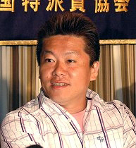
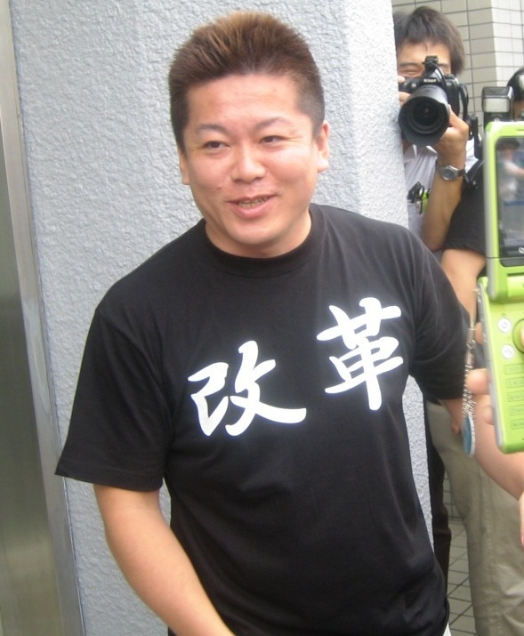
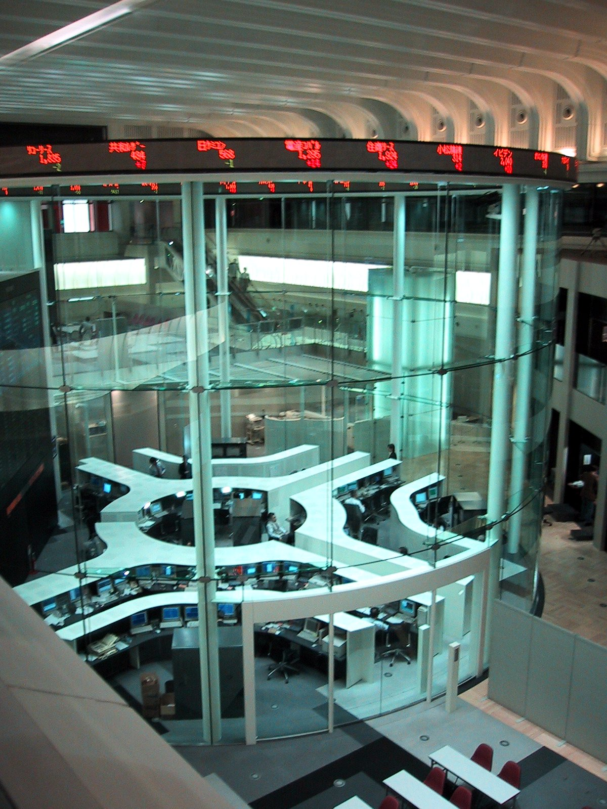
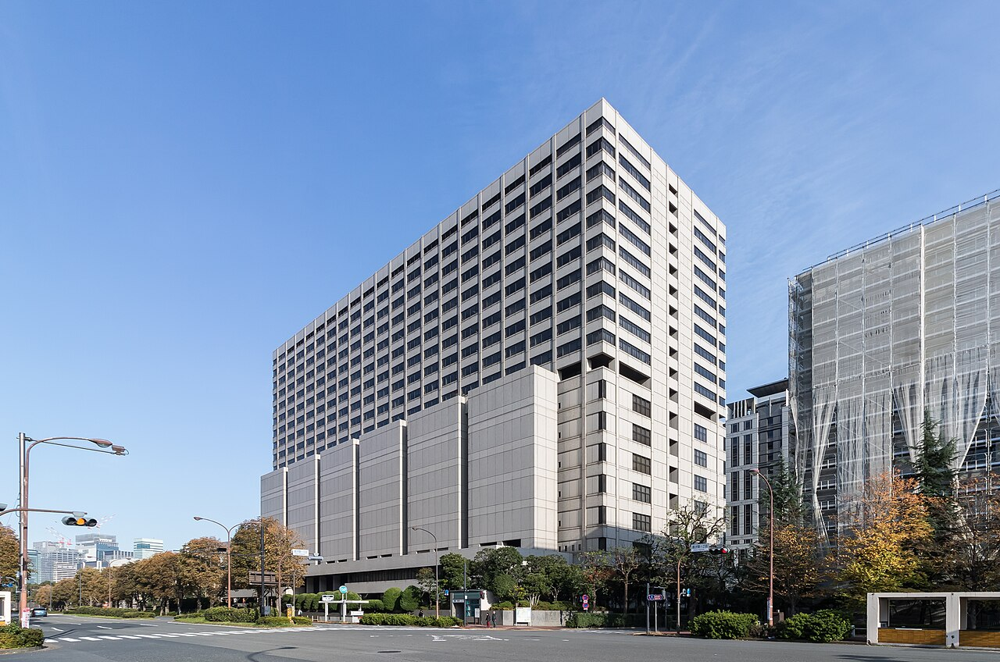
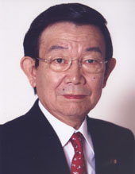
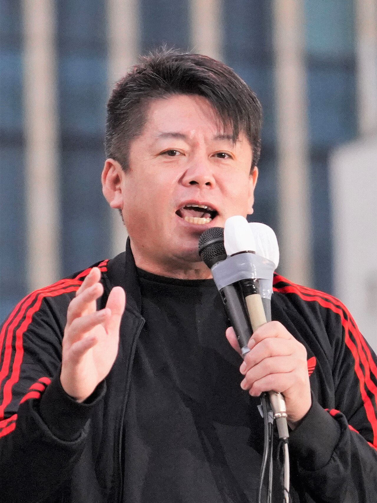

_01.jpg){kind=link}



堀江貴文
ほりえ・たかふみ、1972年生
ライブドア代表取締役社長
経営トップとして有価証券報告書虚偽記載・偽計等に共謀したと認定。懲役2年6月、2011年確定。3
2004年9月期の不正会計 — 強制捜査 2006年1月16日 — 堀江元社長の刑確定 2011年4月25日
投資事業組合を利用して得た自己株式売却益と架空売上を売上高に計上し、赤字を黒字に見せた。1
子会社株の株価上昇を狙い、買収・業績に関する虚偽情報を公表し、偽計・風説の流布とされた。1
強制捜査と逮捕、上場廃止と刑事有罪へ発展した。株主・取引先による損害賠償請求も起きた。5

ライブドアの前身はオン・ザ・エッヂで、堀江貴文が1996年に創業した。2000年には東京証券取引所マザーズへ上場し、2004年に社名をライブドアへ変更したとされる。24
2004年9月期の連結決算が事件の会計面の中心である。証券取引等監視委員会と公認会計士・監査審査会の資料によれば次のとおりである。実際には約3億円の経常損失だった。にもかかわらず投資事業組合を介して売却したライブドア株式の売却益約37億円と、ロイヤル信販とキューズ・ネットに対する架空売上約16億円を売上高に含めた。約50億円の経常利益があるように記載した有価証券報告書を2004年12月27日に提出した。4
ライブドアは、平成16年９月期の連結損益計算書において、経常損失が約３億円発生していたにもかかわらず、会計処理を潜脱する目的で組成した投資事業組合を通じて売却した自己株式売却益約37億円、並びに、株式会社ロイヤル信販及び株式会社キューズ・ネットに対する架空売上約16億円をそれぞれ売上高に含めるなどして経常利益が約50億円と虚偽の内容を記載した平成16年９月期有価証券報告書を、平成16年12月27日に関東財務局に提出した。
意味：実際の赤字と組合、架空売上と提出日までが一続きの事実として記録されている。
投資事業組合は、形式上はライブドア本体とは別の組織であった。しかし監視委員会側の説明では、ライブドア側が組成した投資事業組合を通じて自己株式を売却し、その売却益を連結売上に算入した。監査審査会は「会計処理を潜脱する目的で組成した投資事業組合」と説明している。4
同時に、ライブドアマーケティング株をめぐる別のスキームが進められた。監視委員会は次のように説明している。ライブドアが実質的に買収済みだった企業との株式交換によりライブドアマーケティング株を取得した。同社の業績を粉飾して公表するなどして株価を上昇させたうえ、売却利益を得ようと企てた。1
犯則嫌疑法人(株)ライブドアの代表取締役であった犯則嫌疑者らは、子会社であった(株)ライブドアマーケティングの株式について、実質的に(株)ライブドアが買収済みであった企業との株式交換によりこれを取得し、(株)ライブドアマーケティングの業績を粉飾して公表するなどの方法により同社の株価を上昇させた上で、これを売却して利益を得ようと企て、虚偽の内容等を含む公表を行い、もって、有価証券の売買その他の取引のため及び有価証券の相場の変動を図る目的をもって、偽計を用いるとともに、風説を流布した。
意味：子会社株の上昇と売却益を目的とした一連の行為を、当局が「偽計」「風説の流布」と整理している。
株式交換の対象となったマネーライフをめぐる公表や、ライブドアマーケティングの業績発表が、偽計・風説の流布の対象になった。裁判所の判断については公開された判決要旨を紹介した資料がある。同資料は、バリュークリックジャパンとマネーライフの株式交換と業績発表に関する虚偽公表を認定したと説明している。17
2005年にはライブドアがニッポン放送株を大量取得し、フジテレビとの経営権争奪戦に発展した。ライブドア・パートナーズを通じた2005年2月8日の取得により、ライブドア側の保有比率が自社保有分と合わせて約35％になったとされる。25
この買収攻防により、堀江貴文は「既存メディアに挑むIT企業家」として広く注目された。フジテレビは後にライブドア株の第三者割当増資を引き受け、2005年4月に和解した。20
2005年9月期、ライブドアは連結売上高約784億円を公表した。営業利益は約127億円、純利益は約154億7,500万円だった。eファイナンス事業が売上高の58.4％を占め、金融事業への依存度が高まっていた。12

2006年1月16日、東京地方検察庁特別捜査部と証券取引等監視委員会がライブドア本社、堀江の自宅などを捜索した。捜索対象にはライブドアマーケティング関係も含まれた。14
1月18日、エイチ・エス証券元副社長の野口英昭が沖縄県那覇市内のホテルで死亡しているのが見つかった。衆議院予算委員会で野口の死亡が取り上げられ、政府は沖縄県警が犯罪に起因しないと判断したと答弁した。10
野口死亡については捜査直後という時期だった。エイチ・エス証券がライブドア関連取引に関係していたことから、ネットや週刊誌で他殺説・口封じ説が広がった。しかし公開された政府答弁では、警察の公式判断は犯罪死ではない。2026年11月15日現在、殺人を認定した刑事判決は確認できない。10
1月23日、堀江貴文と宮内亮治、岡本文人と中村長也が逮捕された。2月には熊谷史人も逮捕され、ライブドア本体とライブドアマーケティングに対する捜査が進んだ。14
2月10日、証券取引等監視委員会は、ライブドアマーケティング株の株価上昇を目的とした虚偽公表について告発した。1 3月13日、証券取引等監視委員会は、ライブドアの有価証券報告書虚偽記載について告発した。同日、東京証券取引所はライブドアとライブドアマーケティングについて、虚偽記載の重大性と投資者保護を理由に上場廃止を決定した。25
東証はライブドアの2004年9月期について次のように説明した。本来は経常損失を計上すべきところ、多額の経常利益を意図的・組織的に計上した。また、ライブドアマーケティングについては、虚偽事実の公表などにより投資者の市場信頼を損なったとした。5 2006年4月14日、ライブドア株とライブドアマーケティング株は上場廃止となった。5


2007年3月16日、東京地裁は堀江貴文に懲役2年6月の実刑判決を言い渡した。判決は、堀江が宮内らと共謀したと認定したと報じられている。15 同年3月22日、宮内亮治には懲役1年8月の実刑が言い渡された。熊谷史人には懲役1年・執行猶予3年、岡本文人と中村長也にはそれぞれ懲役1年6月・執行猶予3年が言い渡された。16 3月23日、法人としてのライブドアには罰金2億8,000万円、ライブドアマーケティングには罰金4,000万円が言い渡された。公認会計士の久野太辰には懲役10月、小林元には懲役1年・執行猶予4年が言い渡された。319
2008年7月25日、東京高裁は堀江の控訴を棄却した。高裁は、元幹部の供述は他の証拠と符合し信用できると判断したと報じられている。17 2008年9月12日、東京高裁は宮内の一審判決を破棄し、懲役1年2月の実刑を言い渡した。2009年1月7日、最高裁が宮内の上告を棄却したと証券監視委員会資料に記載されている。3
2009年の株主による損害賠償訴訟で、東京地裁は虚偽記載が投資判断に影響したとした。約76億3,000万円の賠償を命じたと紹介されている。22 2009年1月、フジ・メディア・ホールディングスとライブドア側の損害賠償訴訟は、約310億円の支払いを含む和解となった。21 2011年4月25日、最高裁は堀江の上告を棄却し、懲役2年6月の実刑が確定した。3

| 地点 | 意味 |
|---|---|
| ライブドア旧本社・六本木ヒルズ | 強制捜査の対象となった旧本社（東京都港区六本木6丁目。座標は調査メモで未確認） |
| 東京地方裁判所 | 堀江らの一審公判（東京都千代田区霞が関1丁目1番4号） |
| 東京高等裁判所 | 堀江・宮内の控訴審（東京都千代田区霞が関1丁目1番1号） |
| 東京証券取引所 | ライブドア株の上場市場・上場廃止判断の主体（東京都中央区日本橋兜町2番1号） |
| 東京地方検察庁 | 強制捜査・起訴を担当（東京都千代田区霞が関1丁目1番1号。座標は調査メモで未確認） |
| 那覇市内ホテル | 野口英昭が死亡していた場所（施設名・住所・座標は調査メモで未確認） |
| 金融庁・証券取引等監視委員会 | 犯則調査・告発を担当（東京都千代田区霞が関。座標は調査メモで未確認） |
投資事業組合を介した自己株式売却益約37億円と、ロイヤル信販・キューズ・ネット向けの架空売上約16億円が、連結売上に算入された。監査審査会は、会計処理を潜脱する目的で組成した投資事業組合と説明している。4
ライブドアマーケティング株では、買収・業績に関する虚偽情報の公表が偽計・風説の流布とされた。1 その後、フジ・メディアHDとの和解で約310億円、株主訴訟で約76億3,000万円の賠償が報じられている。2122

堀江貴文
ほりえ・たかふみ、1972年生
ライブドア代表取締役社長
経営トップとして有価証券報告書虚偽記載・偽計等に共謀したと認定。懲役2年6月、2011年確定。3
宮内亮治
みやうち・りょうじ、1967年前後生
ライブドア取締役・財務担当
会計スキームを計画・実行した中心人物とされた。懲役1年2月、2009年確定。3
熊谷史人
くまがい・ふみと、1977年前後生
ライブドア代表取締役・経営企画担当
虚偽公表・会計処理に関与。懲役1年、執行猶予3年。16
岡本文人
おかもと・ふみと、1967年前後生
ライブドアマーケティング社長
子会社株価上昇を狙う公表に関与。懲役1年6月、執行猶予3年。16
中村長也
なかむら・おさや、1967年前後生
ライブドアファイナンス社長
投資事業組合・金融部門に関与。懲役1年6月、執行猶予3年。16
久野太辰
くの・たいしん、1964年前後生
港陽監査法人代表社員・公認会計士
不適切な売上計上を認識しながら監査意見を付したとされた。懲役10月、後に確定。3
小林元
こばやし・はじめ、1954年前後生
港陽監査法人代表社員・公認会計士
監査責任者として虚偽記載を看過。懲役1年・執行猶予4年。3
平松庚三
ひらまつ・こうぞう
2006年1月以降のライブドア社長
事件後の会社再建・対外説明を担当。その後の刑事責任は確認されない。14
清水紀彦
しみず・のりひこ
ライブドア金融部門再建に関係した経営者
事件後の金融事業再編に関与。刑事処分は未確認。
野口英昭
のぐち・ひであき、1967年前後生
エイチ・エス証券副社長
ライブドア関連資金・株式取引の周辺人物。2006年1月18日に沖縄で死亡、犯罪死ではないと政府答弁。10
澤田秀雄
さわだ・ひでお
エイチ・エス証券関係者
野口が勤務した証券会社の経営者。ライブドア事件の刑事被告人ではない。10
村上世彰
むらかみ・よしあき、1959年生
MACアセットマネジメント実質経営者
ライブドアのニッポン放送買収情報を利用した別件インサイダー事件。懲役2年・執行猶予3年、罰金等。2

日枝久
ひえだ・ひさし
フジテレビ会長
ライブドアによるニッポン放送買収攻防の相手方。刑事処分なし。23
久保田真一路
くぼた・しんいちろう
東京地検特捜部関係者として報道された検察官
ライブドア事件捜査側。個別処分は未確認。14
小坂敏幸
こさか・としゆき
東京地裁裁判長
堀江・宮内らの一審判決を担当。司法判断を示した裁判官。15
中川武隆
なかがわ・たけたか
東京高裁裁判長
宮内の控訴審で懲役1年2月を言渡し。18

与謝野馨
よさの・かおる
金融担当大臣
事件後の市場・規制対応について発言。刑事処分なし。11

ライブドアの平成１６（２００４）年９月期の最初の予算である
各事業部や子会社の予算案から作成されている
ライブドアファイナンスによる投資事業は含んでいない
「売上高は１３２億円／営業利益は２２．７億円」で、最初の予算案だからアグレッシブだった
証人は、「売上高は１００～１１０億円／営業利益は７～８億円」が妥当と感じていた
前年比増収増益で、実現可能な数字だった
経営陣の考えで、全事業の増収増益が求められた
減収減益だと、各事業部長や子会社社長の減給や降格もありえた
判断は、堀江貴文被告（ライブドア前社長）が行っていた
前年実績などから、予算案を現実的な数値に修正するのが証人の仕事であった
堀江被告に予算案を報告したところ、容赦なかった
堀江被告は、ライブドアファイナンスによる投資事業が含まれないことは知っていた
意味：判決文が引用する証人尋問記録には、予算目標への圧力と、堀江元社長の認識に関する供述が残る。
上司と部下・盟友。堀江が経営トップ、宮内が財務・会計実務の中心を担った。判決では宮内の供述とメール等が堀江の関与を裏づけるものとして評価された一方、堀江側は宮内が自己の責任を軽くするために堀江主導を演出したと反論した。15
上司と部下。熊谷は代表取締役・経営企画担当として側近に位置し、虚偽公表や会計処理に関する供述を行った。岡本はライブドアマーケティング社長として業績公表の実務を担い、中村はライブドアファイナンス社長として投資事業組合を用いた株式取引の周辺に位置した。161
同じ経営中枢、または資金の出し手と受け手。会計処理・企業買収・開示を担当する経営陣として行動し、熊谷の供述が裁判で信用性を認められた。本体側の財務・株式スキームと子会社側の業績公表が連動し、中村が率いる金融部門・投資事業組合が自己株式売却益の会計処理に関係した。1514
資金の出し手と受け手。野口はエイチ・エス証券副社長としてライブドア周辺の証券・資金取引に関係したが、両者の個人的な具体的関係は未確認。野口は澤田が関係する証券会社の幹部だった。10
対立・確執。ライブドアのニッポン放送買収をめぐり、村上ファンド側が重要情報を知って株式を取得した別件インサイダー事件が発生した。日枝久との間では、ニッポン放送・フジテレビの経営権をめぐり、IT企業と既存メディアの対立が全国的に注目された。223
強制捜査後、堀江が社長を辞任し、平松が後継社長として会社再建を担った。久野は監査責任者として売上計上の問題を認識しながら監査意見を付したと認定された。堀江は一貫して無罪を主張し、検察側は宮内らの供述やメール等から共謀を立証した。14415
両名は港陽監査法人の公認会計士としてライブドア監査に関与し、共に有罪判決を受けた。フジテレビは2005年の和解でライブドアの第三者割当増資を引き受け、後に虚偽記載を理由として損害賠償を請求した。320
暴力団・総会屋・仕手筋・政治家・フィクサーとの関係について、調査メモに示された認定の段階だけを記す。総会屋関与と外部仕手筋の関与は公的資料では確認できない。海外口座・タックスヘイブンへの資金流出も確認できないため、項目を設けない。
お話がありましたように、ライブドア事件については証券取引等監視委員会が10日に証券取引法違反、これは風説の流布と偽計ですが、これで堀江前社長ら四名と法人二社を東京地検に告発、これを受けて本日東京地検がこれらの者について起訴をしたと承知しています。証券取引等監視委員会が風説の流布など証券取引の公正を害する悪質な行為に対して、これを告発して刑事訴追を求めるという形で厳正に対処するというのは、証券市場の健全な発展に資するものであると考えています。
所見というお話ですので一般論で申し上げますと、証券市場というのは経済活動の重要な基盤であります。従って、これは公正透明で信頼されるものであることが必要であると考えております。
意味：当時の金融庁長官が、告発を市場の健全性と情報開示の問題として位置付けている。
疑惑 野口死亡をめぐる他殺・口封じ説
ネット・週刊誌等で広がったが、政府答弁は沖縄県警の非犯罪死判断を示す。殺人の公的認定は未確認。10
疑惑 暴力団による資金回収説
公開された公的資料で、暴力団がライブドア事件の不正資金を最終取得したとの認定は確認できない。1
疑惑 政治家による捜査指示説
事件が政治的弾圧だったとの当事者・評論上の主張はあるが、捜査指示を認定した判決は確認できない。11
認定 村上ファンドとの接点
ライブドアによるニッポン放送株買収情報を公表前に知り、株式を取得したインサイダー事件は別件として公的に告発・判決化された。2
報道 政治献金・選挙資金との直接連動
堀江の2005年衆院選出馬は確認できるが、事件の粉飾資金が政治献金へ流れたとの公的認定は未確認。24
指摘 エイチ・エス証券の仲介機能
野口はライブドア関連捜査の周辺人物として国会で取り上げられたが、証券会社が暴力団・闇社会の資金窓口だったとの公的認定は未確認。10
堀江・旧経営陣
株価・時価総額・資金調達力・経営権を得た可能性がある。一方で刑事有罪と実刑、株主訴訟と社会的信用喪失を負った。3
一般株主
虚偽記載公表・強制捜査・上場廃止に伴う株価下落損失を被り、東京地裁は約76億3,000万円の賠償を命じたとされる。22
フジ・メディアHD
ライブドア株価下落に伴う損害を主張し、約310億円を含む和解金を得たと報じられた。21
債権者・取引先
会社信用低下、金融部門売却、事業再編による取引先変更などの影響を受けた。個別損害額は未確認。
従業員
旧経営陣の退陣、金融部門売却、社名・事業再編の影響を受けた。個々の損失額は未確認。
監査法人・公認会計士
監査責任・刑事処分・信用失墜を負った。4
東京証券取引所
上場廃止判断により投資者保護を図った一方、市場監視・上場審査への批判を受けた。批判の具体的内容は本資料では未詳。5
| 対象 | 罪名・内容 | 一審 | 控訴審 | 上告・確定 |
|---|---|---|---|---|
| 堀江貴文 | 証券取引法違反 | 東京地裁 2007年3月16日、懲役2年6月 | 東京高裁 2008年7月25日 控訴棄却 | 最高裁 2011年4月25日 上告棄却、確定 |
| 宮内亮治 | 証券取引法違反 | 東京地裁 2007年3月22日、懲役1年8月 | 東京高裁 2008年9月12日、懲役1年2月 | 最高裁 2009年1月7日 上告棄却、確定 |
| 熊谷史人 | 証券取引法違反 | 懲役1年・執行猶予3年 | — | — |
| 岡本文人 | 証券取引法違反 | 懲役1年6月・執行猶予3年 | — | — |
| 中村長也 | 証券取引法違反 | 懲役1年6月・執行猶予3年 | — | — |
| 久野太辰 | 公認会計士 | 懲役10月 | — | 後に確定 |
| 小林元 | 公認会計士 | 懲役1年・執行猶予4年 | — | — |
| ライブドア法人 | 法人 | 罰金2億8,000万円 | — | — |
| ライブドアマーケティング法人 | 法人 | 罰金4,000万円 | — | — |
刑事の出典：証券取引等監視委員会・告発事件一覧、ITmedia、AFP。31619
| 事件 | 結果 | 日付・備考 |
|---|---|---|
| 一般株主訴訟 | 東京地裁が約76億3,000万円の賠償を命じたと紹介 | 2009年5月21日22 |
| フジ・メディアHD | ライブドア側と約310億円を含む和解 | 2009年1月21 |
| 個別の全株主訴訟、LDH旧役員・監査法人への請求総額 | 本報告の範囲で全件確認できず | — |
| 対象 | 処分 | 日付 |
|---|---|---|
| ライブドア株 | 上場廃止 | 2006年4月14日5 |
| ライブドアマーケティング株 | 上場廃止 | 2006年4月14日5 |
| 港陽監査法人・監査人 | 刑事処分に加え、監査制度上の信用を失墜させたと日本公認会計士協会が声明を公表 | 2007年27 |

犯則嫌疑法人(株)ライブドアの代表取締役であった犯則嫌疑者らは、子会社であった(株)ライブドアマーケティングの株式について、実質的に(株)ライブドアが買収済みであった企業との株式交換によりこれを取得し、(株)ライブドアマーケティングの業績を粉飾して公表するなどの方法により同社の株価を上昇させた上で、これを売却して利益を得ようと企て、虚偽の内容等を含む公表を行い、もって、有価証券の売買その他の取引のため及び有価証券の相場の変動を図る目的をもって、偽計を用いるとともに、風説を流布した。
意味：子会社株の上昇と売却益を目的とした一連の行為を、当局が「偽計」「風説の流布」と整理している。
犯則嫌疑法人(株)ライブドアの代表取締役社長であった犯則嫌疑者らは、同社の監査証明の業務に従事していた港陽監査法人の公認会計士ら（犯則嫌疑者）と共謀の上、同社の業務に関して、売上計上の認められないライブドア株式売却益約38億円を売上高に含め、また架空売上約16億円を計上するなどの方法により、連結経常利益を約50億円と粉飾した虚偽の記載のある連結損益計算書を掲載した有価証券報告書を提出した。
意味：自己株売却益と架空売上を組み合わせ、利益を大幅に見せたという当局の事件構成である。
ライブドアは、平成16年９月期の連結損益計算書において、経常損失が約３億円発生していたにもかかわらず、会計処理を潜脱する目的で組成した投資事業組合を通じて売却した自己株式売却益約37億円、並びに、株式会社ロイヤル信販及び株式会社キューズ・ネットに対する架空売上約16億円をそれぞれ売上高に含めるなどして経常利益が約50億円と虚偽の内容を記載した平成16年９月期有価証券報告書を、平成16年12月27日に関東財務局に提出した。
意味：実際の赤字と組合、架空売上と提出日までが一続きの事実として記録されている。
① 公認会計士１名は、ライブドアが投資事業組合を組成してライブドア株式を売却し、その売却益を連結売上に計上していることを認識しながら当該売却益の連結売上計上を容認し、さらに、株式会社ロイヤル信販及び株式会社キューズ・ネットに対する売上取引に係る証憑書類がなく、架空の売上が計上されていることを認識しながら、実体を伴う売上であることを示す証憑書類の提出を指示するなどして、該当売上等の計上を容認した。
意味：監査上の見落としではなく、問題を認識したうえでの容認・書類提出指示が記録されている。
○公認会計士
（１）処分内容
登録抹消
（２）処分理由
ライブドアの平成16年９月期の財務書類について、故意に、虚偽のある財務書類を虚偽のないものとして監査証明を行った。
○公認会計士
（１）処分内容
業務停止９ヶ月（平成19年６月７日から平成20年３月６日まで）
（２）処分理由
ライブドアの平成16年９月期の財務書類について、相当の注意を怠り、重大な虚偽のある財務書類を重大な虚偽のないものとして監査証明を行った。
意味：監査人について、故意の監査証明と注意義務違反を区別して処分している。
ライブドアの平成１６（２００４）年９月期の最初の予算である
各事業部や子会社の予算案から作成されている
ライブドアファイナンスによる投資事業は含んでいない
「売上高は１３２億円／営業利益は２２．７億円」で、最初の予算案だからアグレッシブだった
証人は、「売上高は１００～１１０億円／営業利益は７～８億円」が妥当と感じていた
前年比増収増益で、実現可能な数字だった
経営陣の考えで、全事業の増収増益が求められた
減収減益だと、各事業部長や子会社社長の減給や降格もありえた
判断は、堀江貴文被告（ライブドア前社長）が行っていた
前年実績などから、予算案を現実的な数値に修正するのが証人の仕事であった
堀江被告に予算案を報告したところ、容赦なかった
堀江被告は、ライブドアファイナンスによる投資事業が含まれないことは知っていた
意味：判決文が引用する証人尋問記録には、予算目標への圧力と、堀江元社長の認識に関する供述が残る。
平成１５（２００３）年１０月下旬にイーバンクとの提携が暗礁に乗上げていて、ファンドの設立が困難になっていた
その頃、中村長也被告（ライブドアファイナンス前社長）に「株式交換で売上１８億円を計上する」と聞いた
ライブドア株の売却益をグループの連結売上にする
良くない予感はしたが、予算作成で手一杯で「数字がまとまればいい」という感覚だった
（中略）
営業利益を１９億円としていた
宮内亮治被告（ライブドア元取締役）に、「２０億円いかないと，堀江被告の承認が取れない」と言われた
２０億円に修正したファイルを１１月７日に、メールで堀江被告に送信した
意味：株式交換による売上計上と、経営トップの承認を得るための数字調整が、証言として判決文に現れている。
堀江被告に「営業利益が２０億円では少ないので、経常利益を２０億円にできないか」と言われた
株式市場の期待を上回り、ライブドアの株価を上げることを意識しているようだった
中村被告に相談し、投資有価証券売上高を２０億円に修正した
他はほとんど変えていない
堀江被告にメールで報告し、１１月１８日に「概ねＯＫでしょう」という承認を得た
平成１６（２００４）年２月の決算短信で、経常利益を２０億円から３０億円に上方修正した
熊谷史人被告（ライブドア元代表取締役）に「ライブドアの株価も上がったし、ウェッブキャッシング・ドットコムとの株式交換もあるから」と言われた
意味：利益目標が株価上昇や株式交換と結び付けられていたことを示す箇所である。
平成16年10月、ライブドア・マーケティング（LDM）が株式交換によりマネーライフ社を完全子会社とすることを発表。実際にはライブドアが出資し事実上支配する投資事業組合が４ヶ月前に現金でマネーライフ社を買収。交換の目的で発行されたLDM株式はマネーライフ社でなく投資事業組合に渡っていた。
買収当時、マネーライフ社は30百万円の債務超過状態に陥っていたが、当該投資事業組合が約40百万円で現金買収することで見かけ上の債務超過を解消。LDMも平成16年11月12日の第３四半期の業績発表において、本来は赤字だったが架空の売上を計上し「増収増益で完全黒字化した」と偽った。
意味：買収主体と株式の受け皿、債務超過の見せ方と業績発表が一体化していたとする当局資料である。
上記の株式交換日は当初は同年12月１日だったが、LDMは同年11月８日に１株を100分割することを発表し、株式交換日を平成17年１月20日にずらした。その結果、買収前に1780円だったLDMの株価は株式分割の基準日（11月30日）を過ぎてからは一気に上昇し、12月16日には高値の８万５千円をつけた。
投資事業組合は高値でLDM株を売り抜け、約８億円の収入の大半がライブドアに還流した。
意味：株式分割と株式交換日の変更、株価上昇と売却益の還流を、資料が具体的な価格と金額で記録している。
お話がありましたように、ライブドア事件については証券取引等監視委員会が10日に証券取引法違反、これは風説の流布と偽計ですが、これで堀江前社長ら四名と法人二社を東京地検に告発、これを受けて本日東京地検がこれらの者について起訴をしたと承知しています。証券取引等監視委員会が風説の流布など証券取引の公正を害する悪質な行為に対して、これを告発して刑事訴追を求めるという形で厳正に対処するというのは、証券市場の健全な発展に資するものであると考えています。
所見というお話ですので一般論で申し上げますと、証券市場というのは経済活動の重要な基盤であります。従って、これは公正透明で信頼されるものであることが必要であると考えております。
意味：当時の金融庁長官が、告発を市場の健全性と情報開示の問題として位置付けている。
監査をやられる方というのは、自分の職業としてやられるという側面のほかに、やはり大きな社会的責任を持った業務に取組むというのが、私は特徴であると思っております。これは、公認会計士あるいは監査法人だけではなく、その他の例えば弁護士の方々なども、やはり大きな社会的な責任を持っているという職業分野であると思っております。そういう意味では、一連の監査人の不祥事が続いたということは、極めて遺憾なことであり、こういうものにどう対処していくのかということは、当該の色々なことに関係した方々の処分に止まらず、やはり監査法人のあり方、或いは監査人のあり方等々を含めまして、どこかできちんと検討し、対策をとっていかなければならないと思っております。
意味：事件が個別の会計士の処分にとどまらず、監査法人制度全体の問題として認識されていた。
争点の堀江側主張の一部は、調査メモが毎日新聞掲載記事（出典一覧外URL）を挙げている。本頁では判決報道（15・17）と政府答弁（10）、金融庁会見（11）で裏付け可能な範囲に限って記した。

.jpg){kind=link}